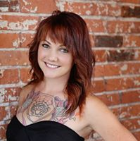

From the Owners of Rustic Pear Salon:) Ronda Hansen, Amber Salinas and Ali Olsen
What a fun year this has been for RUSTIC PEAR SALON!!!
We took a leap of faith and opened a salon in Downtown Twin Falls,
knowing the renovations that will be taking place on Main Street will be an amazing atmosphere for many to enjoy!!!
We couldn't of done it without husbands, family members, and friends who saw our vision and were there to lend a helping hand!
It's hard to mention all the blessings that have come from this adventure,
but our fabulous Stylist and Nail Tech have been AWESOMELY amazing and great team players!
The Holidays are upon us and it is such a fun time of year for party's and spending time with family!
Thank you to all our clients who support our girls, know that we are so thankful for you!
Season Blessings!
Courtney
Today at Rustic Pear Salon we are spotlighting Courtney Beams!!!
She attended Master Educators Beauty School and has been working in the Beauty Industry for 2 1/2 years. Courtney is a perfectionist and cares about the services she provides for her clients. Services that she offers are Nails, Haircuts and fun Hair Colors!! Courtney and her husband have an adorable baby girl who is 10 months old, she loves being a mother and taking care of her family!
She works Monday, Wednesdays and every other Saturday:)
Call now to book an appointment! Salon # 208-733-5377 Cell Phone # 208-420-7529
Val
This week Rustic Pear Salon would like to spotlight Val Potts!
We absolutely love having her at our salon!!! Val has a sweet personality that everyone wants to be around! She cares about her clients and always tries to provide exactly what they want. She brings eight years of experience to the BEAUTY INDUSTRY and has had EXTENSIVE training as an Esthetician! If its skin care that you are looking for she is your girl! Val loves to stay busy at the salon and is the proud momma of a sweet little boy, and a new baby girl who is expected to arrive soon:) Her SPECIALS for October are.
Val is at the Salon Monday - Friday!
Rustic Pear Salon #208-733-5377 Cell phone #208-219-2494
Lexi
Today at Rustic Pear Salon we are spotlighting Lexi Bernhise!!!
She is loved for more than just her vibrant personality but the creativity that she brings to her work. She attended Master Educators Beauty school in 2009 and is constantly seeking ways to stay on top of the latest trends and techniques. Her talents combined with her experience make for a hairstylist out of this world. She specializes in dimensional hair color, rocking cuts. and facial waxing. She loves to do highlights and low lights and will have everyone talking about how great you look by the time she is finished. On top of her shear talent in the beauty industry she paints a perfect picture for the ambitious, creative, and feel good woman. She loves dogs, food, and the great outdoors. She could very well be the stylist of your dreams.
Call or text her today to get your hot new look!208.293.5770 (by appointment only)
Crystal
Today at Rustic Pear Salon we are spotlighting Crystal Rhoades!!!
She is super sweet and energetic, a great addition to Rustic Pear Salon! Crystal has been a hairdresser for three years and would love to give you the look you want to achieve. She also is very busy creating awesome nails!
Call and book your appointment today! 208-404-6139
Amanda
This week Rustic Pear Salon would like to spotlight Amanda Joy!!
Amanda Joy is a great addition to our team
She has a cute, spunky personality that is sure to make you smile. She is always excited to learn and try new things, and she is always up to date on the latest styles. She specializes in razor cuts & sassy a-lines.
She also offers many other services including waxing, nails, color, updos and make up.
She is super versatile and can do ANYTHING from mild to wild!!!
Her hours at the salon are Tuesday, Thursday and Saturday. Sunday by appointment only.
Call her at 208.570.7720 or the salon at 208.733.5377.
Shelby
Today we are excited to spot light our very TALENTED Nail Tech, Shelby Nelson!!!
What's so special about Shelby is she "loves" her job and her clients!! Not only does she care about the health of your nails, but she tries hard to deliver exactly what you are looking for!!
Shelby is very creative with her nail designs and many are posted on her facebook page (nails by Shelby)! If you are looking for a relaxing service check out her Pedicures which are sure to please:)
or if you have a special event coming up, she is offering professional makeup that is guaranteed to make you BEAUTIFUL!
Book your appointment today!! 208-308-6764 or call Rustic Pear Salon 208-733-5377
Rachel
We would love to introduce Rachel Miller!!!
She is one of our team players at the Rustic Pear Salon! Rachel loves to do Balayage Colors, Color Weaving, Men's and Ladies Haircuts and Gel Nails!
Call for an appointment 208-749-1095
Britney
We would like to welcome this pretty lady to the Rustic Pear Salon!!! Britney Allred
She is full of fun and energy! She loves to do SASSY Cuts, Men's Cuts and BEAUTIFUL balayages!! She specializes in Eyelash Extensions and Nails! When she isn't busy working at the Salon she enjoys hunting, fishing, hiking, water sports, and pretty much anything that gets her outdoors! She is a country girl at heart!
Call or text for an appointment 208-731-8599
Kara
We are so excited to introduce our newest Hairstylist at Rustic Pear Salon!!!
Kara Larson is a new resident to Twin Falls. She has been in the Beauty Industry for over 8 years! Upon graduating from Paul Mitchell Beauty School in Salt Lake City, she became a SUCCESSFUL Stylist.
With her sharp eye for color and many hours of continuing education, she can create any custom look while enhancing the overall quality of her clients hair. Kara has a particular love for REDHEADS and designing trendy looks for BLONDES and BRUNETTES as well as beautiful Ombre's!!
oShe loves to create pixie cuts and sexy long layers. Along with her passion for the Beauty Industry, Kara loves spending time with her husband and son! She also spends a lot of time trying not to kill everything in her garden😉